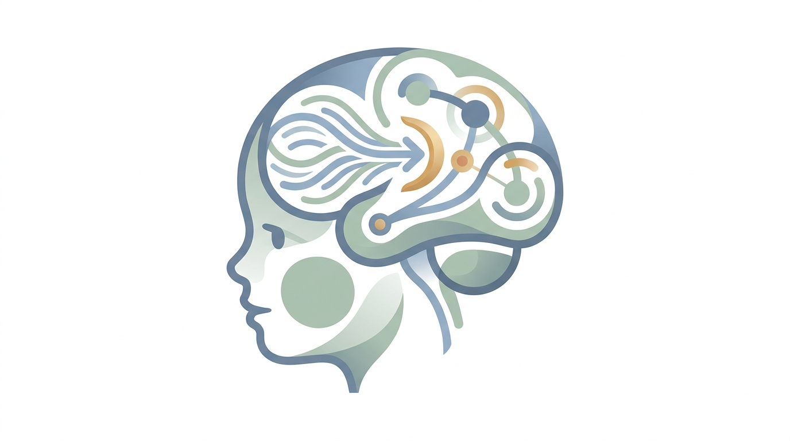

O motor é potente, mas os freios precisam de treino: Desenvolvendo o Controle Inibitório do seu filho em casa.
Por que cobranças e castigos falham com a impulsividade do TDAH e como pequenas mudanças na rotina doméstica criam o autocontrole que a escola e o dia a dia exigem.

Raciocínio ágil, alta curiosidade e energia constante.
Déficit temporal na inibição da resposta imediata.
Seu filho não é desobediente por escolha. Ele sofre de um atraso biológico nos freios da ação.
Compreender a diferença entre saber o que fazer e conseguir fazer no momento exato transforma a culpa parental em estratégia eficaz.
O TDAH não é um problema de saber: é um problema de fazer no "Ponto de Desempenho".
Se você perguntar para uma criança com TDAH no sofá da sala: "Pode bater a porta com força quando fica chateado?" ou "Pode correr no meio da rua?", ela responderá perfeitamente: "Não, é errado". Ela domina a regra moral.
No entanto, segundos depois, no calor do momento, ela bate a porta ou pula no sofá. Isso não é afronta, cinismo ou deboche. O controle inibitório é a capacidade biológica de criar uma fração de segundo entre o impulso interno e a resposta motora. No cérebro com TDAH, esse sinal de freio sofre um retardo neurológico. A ação acontece antes que a consciência da consequência consiga intervir.
A impulsividade não é fruto de má criação, falta de limites ou negligência materna/paterna. Trata-se de um neurodesenvolvimento assimétrico entre os circuitos subcorticais de recompensa (rápidos) e os feixes frontoestriatais inibitórios (que maturam cerca de 30% mais devagar).
Por que treinos formais de mesa em casa só geram atrito e exaustão?
Muitos pais compram cadernos de atividades cognitivas ou tentam "sentar para conversar e treinar disciplina". O resultado quase sempre é choro, desespero e gritaria. Por quê?
-
1Falta de Transferência Ecológica: O cérebro não generaliza folhas estáticas de papel para a hora de desligar o videogame ou esperar a vez de falar.
-
2Dreno Dopaminérgico: Tarefas artificiais desprovidas de contexto aumentam a aversão ao esforço mental sustentado, disparando o modo de luta ou fuga.
-
3Erosão do Vínculo Afetivo: O pai e a mãe deixam de ser figuras de acolhimento seguro e se tornam fiscais frustrados.
Comparativo Clínico: Abordagem Tradicional vs. Manejo Neurofuncional
- • Sermões longos e explicações morais detalhadas quando a criança está desregulada.
- • Castigos demorados ("1 mês sem videogame") que perdem contingência temporal.
- • Exigir autocontrole contínuo por força de vontade pura em ambientes caóticos.
- • Esperar que a criança "aprenda a lição" após uma bronca enérgica.
- • Pistas visuais concretas, timers físicos e instruções curtas de 1 comando por vez.
- • Fracionamento do esforço e reforço contingente imediato com elogio descritivo.
- • Treino dos freios por gamificação e regras de latência corporal (Regra dos 5s).
- • Proteção do ambiente (redução de gatilhos concorrentes de alta estimulação).
Os 4 Pilares do Manejo Inibitório no Cotidiano
Microintervenções estruturadas para transformar o ambiente da casa em uma academia natural de freios executivos, sem brigas ou esgotamento.
A Regra dos 5 Segundos
Adiar a gratificação imediata antes de entregar pedidos
Toda vez que a criança pedir algo com urgência intensa (um copo de suco, o controle remoto, um brinquedo ou abrir uma embalagem), os pais não devem responder de pronto nem repreender a urgência. Introduz-se um atraso intencional e amigável de 5 segundos.
Brincadeiras de Ação e Parada
Gamificação motora da inibição comportamental (Go / No-Go)
Em vez de pedir "fique quieto" de maneira abstrata, a família brinca 5 a 10 minutos por dia com jogos corporais que demandam interrupção brusca do movimento diante de uma regra lúdica.
Microfracionamento do Dever de Casa
Blocos curtos de 10-15 minutos contra a fadiga executiva
O cérebro com TDAH volta da escola com seus estoques de energia executiva e dopamina exauridos pelo esforço de inibição em sala. Obrigar a criança a fazer 1 hora contínua de lição é a receita certa para colapso e resistência violenta.
Recompensas Seguras e Funcionais
Reforço positivo imediato e contingente, sem negociar necessidades básicas
No TDAH, o cérebro tem miopia temporal: prometer um brinquedo no final do mês pelo bom comportamento é biologicamente ineficaz. O reforço precisa ser próximo no tempo, claro e motivador.
Como aplicar este material no seu dia a dia:
Não tente implementar todos os 4 pilares no mesmo dia. Escolha um único pilar por semana para iniciar. Registre em um caderno as situações em que a criança conseguiu usar a pausa dos 5 segundos ou em que o microfracionamento protegeu o final da tarde. Traga essas anotações e dúvidas para as nossas sessões periódicas para calibrarmos juntos os andaimes comportamentais.
Tabela de Expectativas Reais: O que esperar vs. O que não esperar
O desenvolvimento neurofuncional não acontece em linha reta. Compreender a linha do tempo científica evita cobranças desmedidas e acolhe o progresso real da criança.
Curto Prazo
4 a 8 semanas
- Aceitação voluntária da Regra dos 5 Segundos sem colapso imediato.
- Diminuição da intensidade e duração das explosões de frustração em casa.
- Alívio imediato no nível de estresse e sentimento de culpa dos pais.
- Eliminação completa da impulsividade ou comportamento "perfeito" na escola.
- Que a criança execute as pausas de forma 100% autônoma, sem que os pais precisem mediar e lembrar com gentileza.
Médio Prazo
3 a 6 meses
- Maior tolerância a pequenas negativas e atrasos no ambiente social.
- Rotina de dever de casa mais fluida com o uso consolidado do microfracionamento.
- Redução de queixas na escola quanto a interrupções rudes e atritos no recreio.
- Que a criança mantenha o foco prolongado em tarefas desinteressantes sem pistas e supervisão periódica.
- Ausência total de recaídas em dias de privação de sono, fome ou sobrecarga sensorial.
Longo Prazo
1 a 2 anos
- Internalização do diálogo interno ("Para, pensa, age") de forma semi-autônoma.
- Evolução acadêmica estável e relações interpessoais muito mais saudáveis com colegas.
- Autoestima preservada: a criança se enxerga como capaz e não como "o problema da turma".
- O desaparecimento da condição neurobiológica. O TDAH não "cura"; ele passa a ser plenamente gerenciado e adaptado à vida adulta.
- A dispensa permanente de rotinas estruturadas ou de suporte clínico durante transições de ciclo de desenvolvimento.
Perguntas Frequentes de Mães e Pais
Respostas acolhedoras e técnicas para os impasses reais que surgem durante o treino do controle inibitório.
Não necessariamente, e esse não deve ser o objetivo. A necessidade motora de se movimentar é uma característica neurobiológica genuína do TDAH, frequentemente ligada à busca do próprio cérebro por autorregulação dopaminérgica.
O treino do controle inibitório não serve para apagar a vitalidade ou engessar a criança, mas sim para desenvolver a habilidade de acionar o freio quando é indispensável (por exemplo: antes de atravessar uma rua perigosa, antes de bater num colega por frustração ou na hora de esperar a professora terminar uma orientação). Ele continuará sendo uma criança ativa, mas se tornará mais segura e funcional.
O ambiente escolar é de alta exigência inibitória coletiva. Quando a criança não treina o freio em um ambiente controlado e seguro como a casa, a escola vira um palco constante de advertências e desgaste de autoestima.
O treino doméstico dos 4 pilares constrói reserva de latência de resposta. Além disso, ao realizar o acompanhamento terapêutico, fornecemos orientações técnicas para compartilhar com a coordenação pedagógica (como o uso de pausas sensoriais de 2 minutos para a criança levar o estojo ou apagar o quadro, e a quebra das folhas de prova em blocos menores), criando uma ponte coerente entre casa e escola.
No início, é esperado que a criança proteste, pois ela está acostumada com a resposta imediata de urgência. Quando houver resistência, a regra básica é: não aumente a punição e não entre em cabo de guerra verbal.
Utilize a técnica da corregulação calma: abaixe-se na altura dos olhos dele, mantenha sua voz serena e valide o desconforto: "Eu sei que esperar é muito chato e parece que o tempo não passa. Mas eu estou com o copo na mão e assim que contarmos juntos, ele é seu." Se 5 segundos for muito difícil no primeiro dia, comece com 2 segundos e use pistas visuais com as mãos. Vá aumentando 1 segundo a cada dois dias.
Não substitui. De acordo com os consensos clínicos mundiais (Academia Americana de Pediatria, NICE e Diretrizes Brasileiras para o TDAH), o padrão-ouro de eficácia é o tratamento multimodal.
O treino e a orientação parental no cotidiano formam o alicerce diário (onde a vida real acontece 24 horas por dia). A psicoterapia/reabilitação neuropsicológica trabalha o desenvolvimento de estratégias metacognitivas da criança, e a medicação (quando indicada por médico psiquiatra infantil ou neuropediatra) atua nivelando a química cerebral dos circuitos frontoestriatais. Os pilares trabalham juntos, em harmonia e nunca isolados.
Deo S. O. Magalhães
Psicólogo e Neuropsicólogo Clínico (CRP 04/42784). Especialista em Neuropsicologia, Neurociências do Desenvolvimento e Análise do Comportamento Aplicada (ABA). Membro da Sociedade Brasileira de Neuropsicologia (SBNp).
Atuação dedicada à avaliação e intervenção neuropsicológica infantojuvenil, reabilitação cognitiva e orientação parental fundamentada na neurociência afetiva e comportamental.